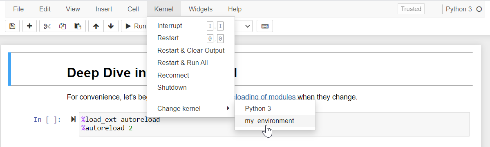

FAQ’s¶
Frequently asked questions.
Attention
Some answers below cover legacy environments (PySide2, Python 3.7–3.9,
macOS 10.14, pre-v0.5 qiskit-metal PyPI package). The current supported
stack is Python 3.10–3.12 with PySide6 (only when the [gui]
extra is installed). If you hit a problem on the current stack and don’t
see it here, check Installation, Using Quantum Metal without the Qt GUI, or open an
issue on GitHub.
Setting up environment¶
Q: jupyter notebook/lab cannot find qiskit_metal. Why is that?
A: If you are seeing: ModuleNotFoundError: No module named 'qiskit_metal' in jupyter notebook/lab, you are using a jupyter installation outside of your current environment and you therefore need to create a kernel that refers to the environment where you installed qiskit_metal. To do so, install and configure ipykernel.
conda:
conda activate <env_name>
conda install ipykernel
ipython kernel install --user --name=<any_name_for_kernel>
virtualenv:
source <env_name>/bin/activate # or .\<env_name>\Scripts\activate
python -m pip install ipykernel
ipython kernel install --user --name=<any_name_for_kernel>
You can now restart jupyter notebook/lab and switch to the newly created kernel using the menu Kernel>Change Kernel.

If jupyter notebook/lab is still unable to find qiskit_metal, you might need to re-install qiskit_metal after installing ipykernel.
You can completely prevent the ModuleNotFoundError by installing jupyter or jupyterlab inside the environment, instead of using a pre-existing installation.
Q: Why is the pip installation asking to install geopandas? Or why is it asking for a path to gdal-config?
A: If you see “A GDAL API version must be specified. Provide a path to gdal-config…” on Windows, this is a known limitation of the Windows wheels for gdal and fiona. The simplest fix is to use conda for these packages:
conda install -c conda-forge geopandas
python -m pip install --no-deps -e .
If you cannot use conda, modern geopandas (>=1.0) for Python 3.10+ ships with bundled GDAL on Windows. Make sure you are on a current Python (3.10–3.12) and an up-to-date pip. The historical lfd.uci.edu binary-wheels archive (gohlke wheels) is no longer available (site retired in 2022).
Q: Why is my installation complaining about missing ``geos_c.dll``?
A: This was a known bug with very old shapely (<1.8). On the current stack (Python 3.10–3.12 with shapely 2.x) the issue should not occur. If you see it, upgrade shapely: pip install -U shapely, or use the conda package: conda install -c conda-forge shapely.
Q: Why do I have an invalid active developer path on MacOs?
A: If you are seeing: xcrun: error: invalid active developer path (/Library/Developer/CommandLineTools), missing xcrun at /Library/Developer/CommandLineTools/usr/bin/xcrun you may be missing the Command Line Tools.
The Command Line Tools package for XCode should be already installed.
If not, they can be installed with: xcode-select —install
Q: Why can’t qutip find my path?
A: qutip may have issues finding your path if using VSCode, resulting in a KeyError: 'physicalcpu'. If the error occurs, please add your PATH to VSCode’s settings as follows.
Windows:
Open Windows Command Prompt and type:
$Env:Path
Copy the resulting output. Example: "PATH": "/usr/local/bin:/usr/bin:/bin:/usr/sbin:/sbin"
Then open the applicable settings.json in your VS Code. (See how to open command palette here here2). Search “settings” and click Open Workspace Settings (JSON)). Paste:
"terminal.integrated.env.windows": {
"PATH": "/usr/local/bin:/usr/bin:/bin:/usr/sbin:/sbin"
}
MacOs:
Open Terminal and type:
echo $PATH
Copy the resulting output. Example: "PATH": "/usr/local/bin:/usr/bin:/bin:/usr/sbin:/sbin"
Then open the applicable settings.json in your VS Code. (See how to open command palette here). Search “settings” and click Open Workspace Settings (JSON)). Paste:
"terminal.integrated.env.osx": {
"PATH": "/usr/local/bin:/usr/bin:/bin:/usr/sbin:/sbin"
}
Q: Why are “xcb” or “windows” found but not loaded?
A: it has been observed for pip installation on fresh conda environments that this error might show up: Could not load the Qt platform plugin "xcb" in "" even though it was found.
Note
These errors come from PySide6 / Qt starting up — they only fire if you instantiate MetalGUI or import code that pulls Qt. If you’re on the lite install (v0.7.0+ pip install quantum-metal without [gui]) and you see one of these, you either need pip install "quantum-metal[gui]" or you should switch to the headless qm.view(design) path — see Using Quantum Metal without the Qt GUI.
For xcb: based on this source, you might be able to resolve this error by installing the dependency with sudo apt-get install libxcb-xinerama0.
For windows: this error intermittently shows in conda environments. It was found that the problem resolves if PySide6 is installed manually through conda: conda install pyside6.
If the methods above do not work, consider trying an older version of Python (and related dependencies).
Q: Why am I not able to start Jupyter Lab in the new environment?
A: Based on: this, install Jupyter lab by
conda install -c conda-forge jupyterlab
Then re-install the qiskit-metal package with pip, for example, if you are using the github local installation flow run the following:
python -m pip install --no-deps -e .
Q: Why am I seeing a Shiboken / PySide import error after upgrading? (legacy)
A: If you upgraded from a pre-v0.5 release that used PySide2 and see errors like Unable to import Shiboken2 or '_int_pyside_extension' is not defined, you have leftover PySide2 traces conflicting with the current PySide6 stack. Clean up:
pip uninstall -y pyside2 shiboken2
pip install -U "quantum-metal[gui]"
If you used conda for PySide2: conda remove pyside2 shiboken2 first. The cleanest fix is to start a fresh virtual environment (uv venv or python -m venv).
Getting started with GUI development¶
Quantum Metal’s desktop GUI (MetalGUI) is built on PySide6 (Qt for
Python). Resources for learning PySide6 / Qt:
Real Python — PyQt/PySide GUI tutorial (PyQt; concepts transfer to PySide6)
If you’re working on the lite install (no Qt), see the headless workflow at Using Quantum Metal without the Qt GUI instead — a Jupyter-widgets-based viewer is planned as a lighter alternative to the desktop GUI (see ROADMAP.md).
Documentation¶
Q: I am seeing a lot of warnings when I build the docs. How do I resolve them?
A: There is no need to build the docs locally unless you really want to. The docs can be accessed without building them yourself by navigating to https://qiskit-community.github.io/qiskit-metal/.
If you chose to build the docs yourself, some users may see a list of warnings when building the docs. Warnings about matplotlib text role can be safely ignored.
You can resolve other warnings by deleting the following directories and rebuilding:
docs/_build
docs/build
docs/stubs
Q: How do I download a tutorial?
A: All tutorial notebooks live in the tutorials/ folder on GitHub. To download a single notebook, navigate to it on GitHub and click the Download raw file button (the download icon in the top-right of the file view). To get them all, clone the repository:
git clone https://github.com/qiskit-community/qiskit-metal.git
cd qiskit-metal/tutorials
Connecting to 3rd party software¶
Q: I’m having trouble connecting to Ansys after running connect_ansys().
A: First check to see if a project and design are already open and active in Ansys.
Activate an Ansys design by double clicking on it in the Project Manager panel.
If the error persists, there may be one or more hidden Ansys windows in the background. Close them via the task manager and try again.
Why am I getting a win32com error?
If you have run a EnsureDispatch command as part of qiskit-metal or independently in your conda environment, you might later encounter errors such as AttributeError: module 'win32com.xxx' has no attribute 'CLSIDToClassMap'.
To resolve this, you will need to delete the temporary module python files that EnsureDispach creates as part of COM object method retrieval.
To do so, delete the entire folder gen_py or just the file in it that corresponds to your error message.
Note that this folder might show up in different paths, depending on the OS and setup. You should in general be able to find it at this path: $env:LOCALAPPDATATempgen_py